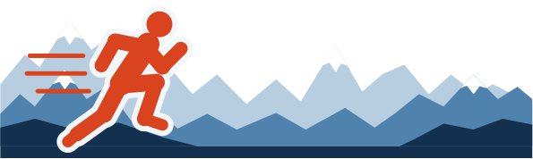

atlete e atleti Master attesi, uomini e donne

Save the date
17.04.2027
MASTER EUREGIO CUP
Il nuovo meeting transfrontaliero di atletica leggera per la categoria Master.
---giorni
--ore
--minuti
--secondi
Lo spirito
Tre territori. Una pista. Mille emozioni.
La Master Euregio Cup nasce per celebrare chi non smette mai di correre, saltare e lanciare: atlete e atleti Master che ogni giorno dimostrano che lo sport non ha età.
Tra le montagne dell’Euregio, Tirolo, Alto Adige e Trentino si ritrovano sulla stessa linea di partenza per una giornata di gare vere, sana rivalità e grande amicizia. Ognuno gareggia per i colori della propria società, ogni centesimo limato e ogni centimetro conquistato sono una festa da condividere.
Pronti? Ai blocchi di partenza!
alla partecipazione di atleti provenienti da altre regioni e Länder
ogni atleta gareggia per la propria società, non per rappresentative o selezioni regionali
Perché questo evento
Più di una gara: un traguardo per tutto il movimento Master
Più visibilità
Al movimento Master a livello locale: un evento di questo tipo accende i riflettori e l’interesse dei media.
Una spinta in più
Un appuntamento internazionale nel calendario agonistico è la motivazione perfetta per allenarsi e dare il massimo.
Euregio in pista
Valorizzare l’Euregio anche sul piano sportivo, unendo Tirolo, Alto Adige e Trentino nel segno dell’atletica.
Programma
Le gare in programma
M · Uomini
F · Donne
- 100 mVelocità
- 400 mVelocità
- 1500 mMezzofondo
- 3000 m FMezzofondo
- 5000 m MFondo
- Salto in lungoSalti
- Salto in altoSalti
- Getto del pesoLanci
- Lancio del giavellottoLanci
- Staffetta 4x100 mSquadra
Le gare senza sigla sono aperte sia agli uomini sia alle donne.
Sede di gara
Ogni anno una città diversa
La sede della Master Euregio Cup cambia ogni anno e attraversa i tre capoluoghi dell’Euregio: un viaggio tra Alpi e Dolomiti, una tappa alla volta.
Innsbruck
Bolzano · Bozen
Trento · Trient
17.04.2027
Allaccia le scarpe. Si parte!
Il conto alla rovescia è iniziato: preparati a vivere la prima edizione della Master Euregio Cup.